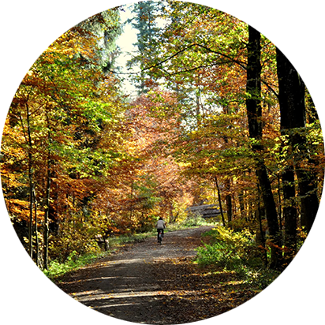
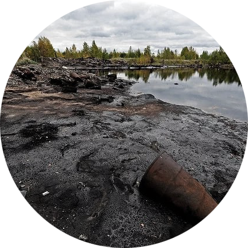
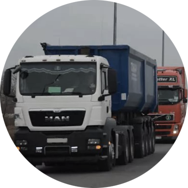
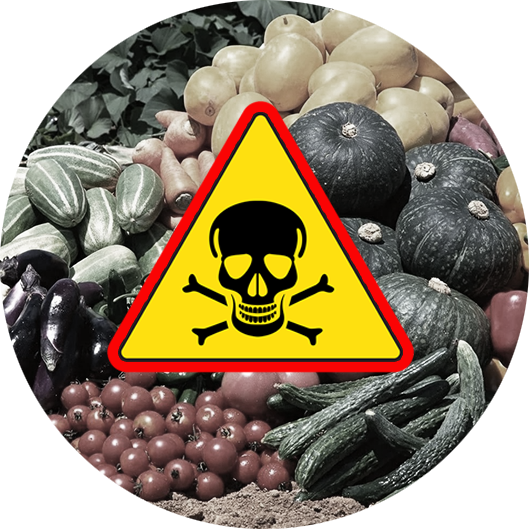

ВНИМАНИЕ ОПАСНОСТЬ!
Новый завод «Амкодор» в Колодищах - это строительство экологически грязного производства, выпускающего до 12 000 погрузчиков в год.

127,57 тонн вредных выбросов в атмосферу в год - от сажи до формальдегидов, диоксидов, свинца, аммиака, ртути.


Промышленные стоки попадут в почву и загрязнят подземные воды на многие километры.


Вырубка 3 гектаров леса под пруды-испарители, куда будет стекаться вся грязь с завода.


Многополосная дорога с интенсивным движением грузового транспорта под заборами детского сада, школы и жилых домов.

Приусадебные участки перестанут быть зоной оздоровления. Продукция, выращиваемая на них, станет опасной для здоровья.


От нас скрывают экологическую документацию, к нашему мнению не прислушиваются, игнорируется закон.